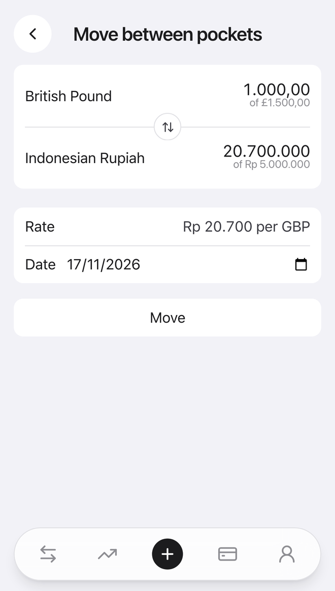
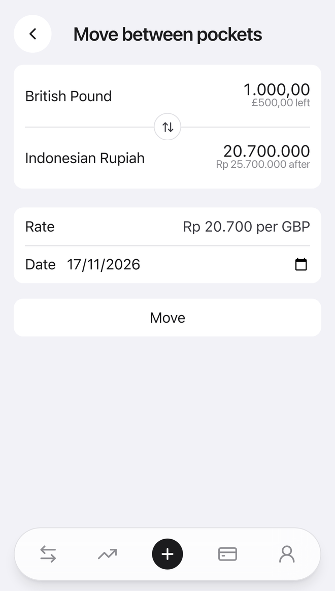

Invented example: GBP pocket £1.500, IDR pocket Rp 5.000.000; £1.000 → Rp 20.700.000. Same as option 2 (no ⓘ next to Rate); only the small grey words under each amount differ. Edited from the real build-145 screenshot.
A"of £1.500,00"
Reads with the amount: 1.000,00 of £1.500,00.

BThe balance alone
Just the figure, no word.
CWhat is left / after
The result of the move: £500,00 left in GBP; Rp 25.700.000 after in IDR. Updates while typing.

D"Balance …"
The word the account page uses.